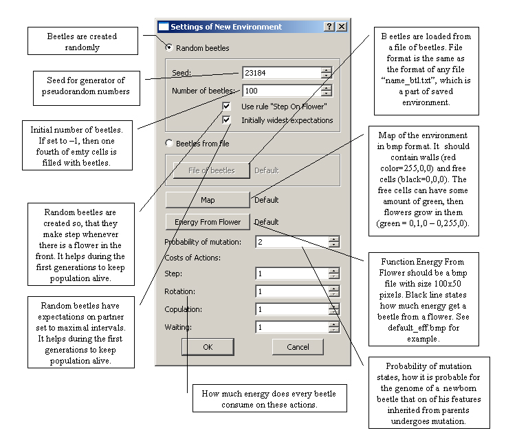
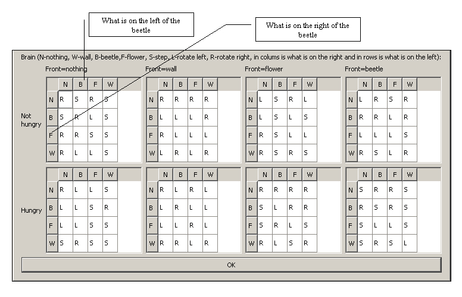

Abeetles 1.0
How to install Abeetles
To install Abeetles 1.0, drag the main folder entitled "Abeetles" to your
favorite location in your home directory.
How to Start
Abeetles should be launched from the directory "Abeetles" that must be set to be writable and must contain at least the files "default_map.bmp", "default_eff.bmp", "default_beetles.txt", "mingwm10.dll", "QtCore4.dll", "QtGui4.dll" and subdirectory "imgs".
Abeetles can be launched in two ways:
- Application with grafical interface can be run directly by launching abeetles.exe
- Application can be launched with settings in a script file from command line using command " abeetles -s [scriptname] ". The script file must have format described in file "ScriptReadme.txt".

Abeetles - graphical version
After launching, the main window of application is opened.

So as to create a new environment choose "New Environment" in menu "File". This command will open the dialog of a new environment. In following picture the dialog is described in details:

Thereafter the new environment is created and main window shows the situation in the environment. It offers many useful widgets to run the environment, adjust view or influence the course of matters.

Details of individual beetles can be accessed by right-clicking on the arrow of a beetle. Dialog of beetle's features is displayed as it is described in following two pictures.
The top of the dialog:
The bottom of the dialog:

Abeetles - script run
Abeetles, when run from command line with an input script, does not start any window application. It only saves desired statistics and situations and outputs to the command line. How to write a script file is described in file "ScriptReadme.txt"
For every run set in the script all configuration is displayed, then the run is computed (it may take longer time, when the end time for a run is more then tens of thousands) and final number of updates is written on the screen. All saved statistics and situations of the environment are placed in a directory with the name of the run.
Detailed description of chosen features of Abeetles
Map of environment
Map of environment is an input file that represents the environment. Each pixels stands for one cell. Map sets where are wall and which cells are free. For the free cells it states the percentage of growth of flowers. To sum up, it should have following format:
- Size from 5x5 to 100x100 pixels.
- Pixels where is to be a wall should be red = rgb(255,0,0).
- Pixels that are empty, should have some color from black = rgb(0,0,0) to green rgb(0,255,0). For black cells the probability of growth will be 0% and for the green one it will be 100%.
- Any other color in the map is considered to be black.
Energy from flower function
This function should be submitted to the application as a bmp file of size 100x50. The image should contain black curve, 1 pixel wide, going from left to right. The curve represents graph of the function energy from flower. Axe x (width of image) represents ages of beetles from 0 to 100, every column represents one age value. For every age value = column of the picture the first black pixel from the bottom is taken, its height from bottom is counted and used as amount of energy gained from an eaten flower. When a beetle is older than 100 updates, it gains from every flower as much energy as when its age was 100. If in some column a black pixel is missing, the gained enegy is set to 10 for the respective age.
Types of view
In GUI of Abeetles there are seven types of view of the environment:
- Normal: Flowers are yellow, beetles are blue arrows on white fields.
- Age: Cells with beetles have color from white (newborn) to cyan (the oldest).
- Energy: Cells with beetles are colored from white (almost no energy) to red (energy=50).
- Number of children: Colors from white (0 children) to magenta (10 children and more) distinguish between more and less successful beetles.
- Hunger: Red beetles are hungry, white ones feel happy. Whether a beetle is hungy is set by hungry threshold that is individual for every beetle.
- Growth of flowers: In white cells no flowers grow, it the green ones they grow every turn.
- Species: Species of beetles in Abeetles are defined as groups whose members cannot in all their life mate with members of every other group. Their are distinguished by different colors.
Statistics
To save statistics of the situation in environment use menu Statistics. It offers three types of statistics to save to .txt (Aggregated) or .csv (Time and Histogram) file.
- Aggregated statistics: Into a text file actual number of beetles, flowers and births is written, followed by average features of beetles. Example:
----------
Time=0
NumBeetles=100;
NumBirths=100;
NumFlowers=0;
AvgAge=0.000000;
AvgEnergy=35.410000;
AvgHungryThreshold=26.380000;
AvgInvInChild=27.260000;
AvgLearnAbility=26.830000;
AvgNumChildren=0.000000;
----------
- Time statistics: Time statistics are saved every 500th update to file "statTime.csv". After the maximum size of a .csv file is reached, the old file is save as "[number of update]statTime.csv" and new "statTime.csv" is being filled. When the command from menu is chosen, actual file "statTime.csv" is filled till current update and saved under chosen name. Format of file:
Number of beetles;Number of births;Number of flowers
168;14;217;
163;9;230;
161;7;228;
159;8;228;
156;5;236;
157;6;226;
MS Excel can create a very nice graph from such data:
- Histogram statistics: Shows structure of population. It shows how many beetles have certain value of a particular feature. It contains age, learn ability,investment in children, energy, number of children and hungry threshold. Also expectations of beetles on partners on energy, age, investment in children and learn ability are included. Each value is connected with number of all beetles who have it within their range.